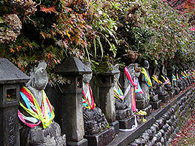
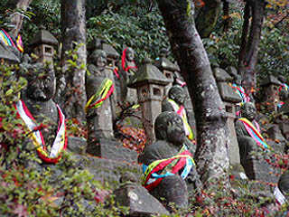
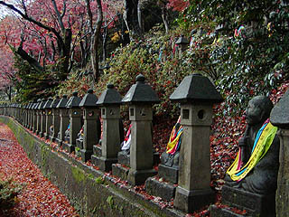
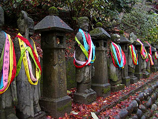
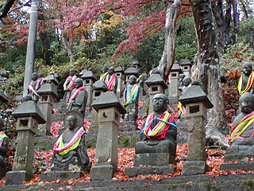
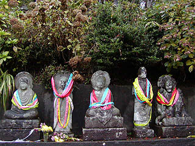
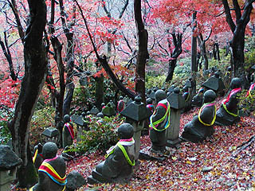
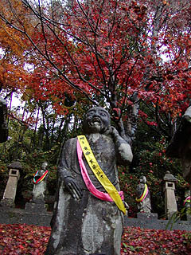
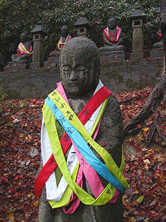
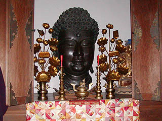

長慶寺/富山県富山市
富山市の郊外に呉羽丘陵と呼ばれるところがある。 桜谷とも呼ばれるこの一帯には富山市民俗民芸村という小博物館群などがあり、見晴しのよいところだ。 その博物館群の中の富山市売薬資料館に行ってみたが、富山の薬売りの資料が豊富で、また、かつての薬の生産方法等が詳しく解説されており、とても興味深かった。 ケロリンに代表される富山のくすりのレトロチックなパッケージの秀逸な事。お土産に紙風船を貰った。 あ、お寺の話でしたね。 この呉羽丘陵の一画に長慶寺という寺がある。 この長慶寺、天明6（1786）年開山の禅寺で,本堂の前からは富山市街が一望出来るグッドロケーションな寺である。 かつては行楽地として賑わっていたというのも判るような気がする。 その長慶寺の境内には石像の五百羅漢がズラズラ〜っと並んでいるのだ。 羅漢像は山の斜面に面した雛壇に530体並んでいるのだが・・・   何だ何だあ〜  羅漢像には何故かカラフルなタスキがかけられている。 しかも一体二体ならともかく全部の羅漢像にである。 しかも一体当り2〜10コという激しさ。平均しても4、5コはかけられていた。 何だか駅伝ランナーのスタート地点みたいですなあ。 この五百羅漢像は江戸後期に富山の米穀商で廻船問屋を営んでいた黒牧善次郎という豪商が佐渡の石工に作らせ、松前へ米を運んだ帰りに佐渡から富山まで船で運ばせたもので、530体揃うのに寛政11（1799）年から嘉永2（1849）年までの50年間かかったそうである。   メイドイン佐渡の羅漢さん、富山の街の向こうの日本海見て何思う。  この寺を訪れた時は時折雨が激しく降ってくる天気で、日中だというのに薄暗く地面や羅漢像が塗れていて全体的にかなり暗〜い雰囲気だったので余計にこのタスキと紅葉の赤が浮き立った印象があった。   タスキには家内安全とか交通安全とか病気平癒といった類いの4文字系祈願と祈願者名が書かれていた。 しかし後で気付く事になるのだがこのカラフルなタスキ、実は富山ではそんなに珍しいものではなかったのだ。 富山県内の路上でよく祠に入った地蔵を見かけたが、そんな地蔵さんなどにもかなりの確率でこのタスキがかけられていた。 何というか、東北あたりのおどろおどろしい石仏に比べて色彩的にもハッピーな感じがした。 「これから皆さんの願いを叶えに頑張って来ます！」みたいな。 ただ、これだけの数の石仏にこれだけのタスキがかけられている光景はチョットないと思う。 富山の深遠なるタスキ信仰の象徴としてこの長慶寺五百羅漢を取り上げてみた次第です。はい。  ここにはかつて桜谷大仏という大仏があった。 廃仏毀釈によって破壊された金仏の頭部だけが本堂の中に安置されていた。 頭の大きさからすると丈六位はあったのだろう。
2003.11.
珍寺大道場 HOME